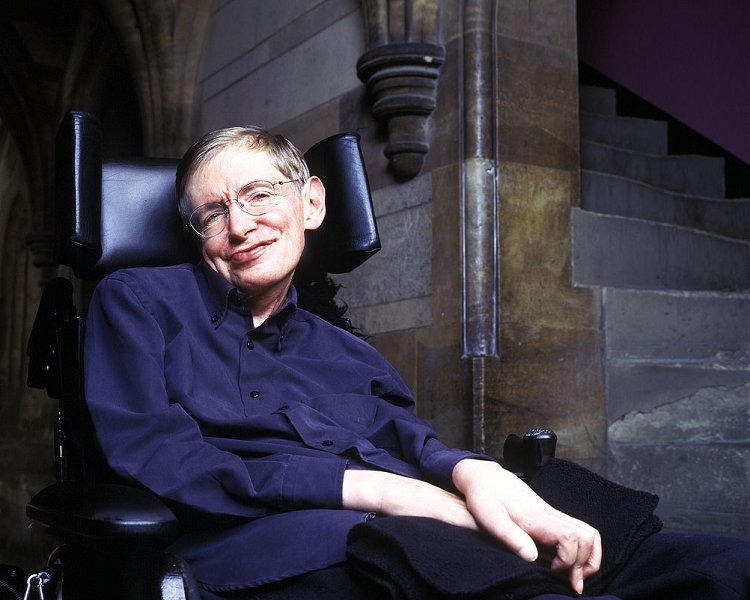

Сті́вен Ві́льям Го́кінг (також Го́кінґ; англ. Stephen William Hawking; 8 січня 1942, Оксфорд, Велика Британія — 14 березня 2018, Кем бридж, Велика Британія) — англійський фізик-теоретик, космолог і автор багатьох книжок, директор з досліджень Центру Теоретичної Космології Кембриджського університету, відомий своїми дослідженнями в астрофізиці, зокрема теорії чорних дір та популяризації наукових знань. Обіймав посаду лукасівського професора математики між 1979 та 2009 роками.
Активно займався популяризацією науки. У квітні 1988 вийшла його книга «Коротка історія часу», яка стала бестселером. Завдяки цій книзі він став відомим на весь світ. Потім були написані книги «Чорні діри та молоді всесвіти» (1993) та «Світ у горіховій шкаралупці» (2001). У 2005 вийшло нове видання «Короткої історії часу» — «Найкоротша історія часу», написане у співавторстві з Леонардом Млодиновим.
Дослідження Гокінга переважно стосується космології та квантової гравітації. Його основні досягнення: